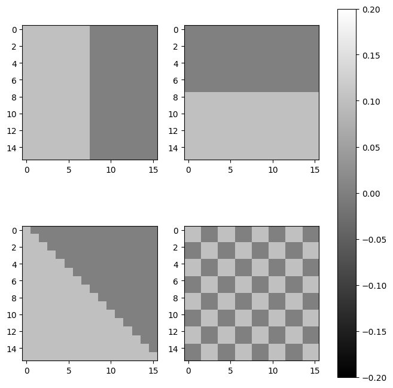
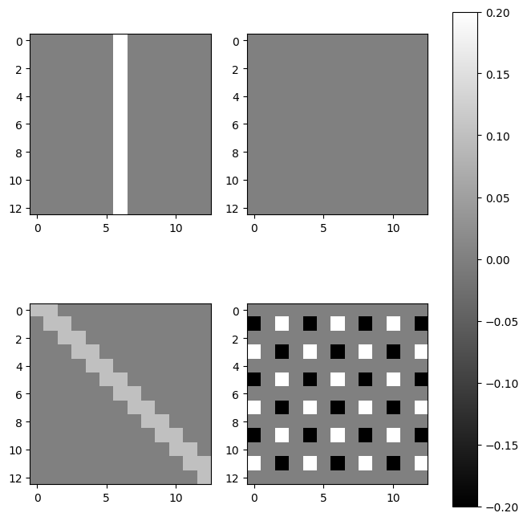
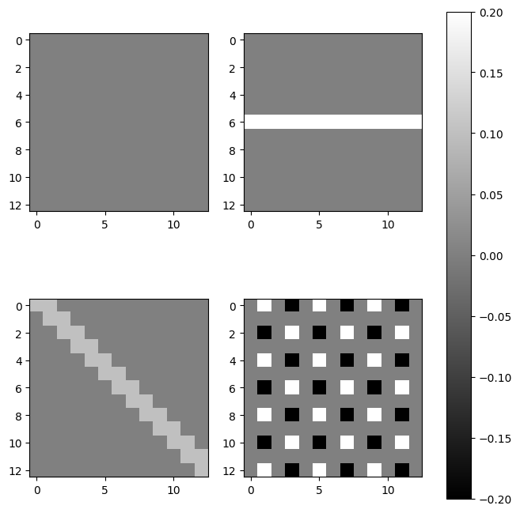
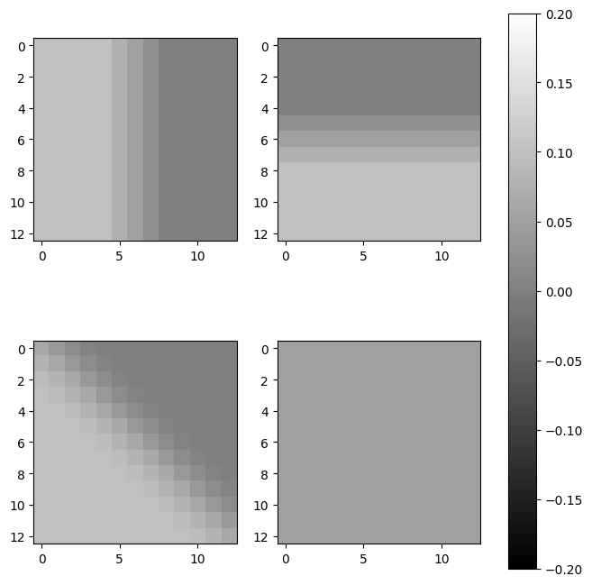
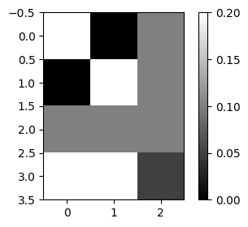
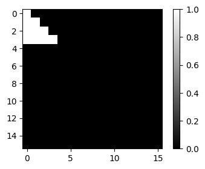
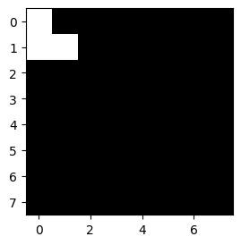
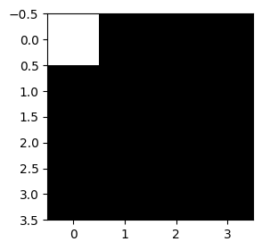
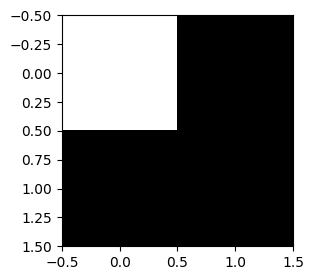

import torch
import matplotlib.pyplot as plt12wk: CNN의 핵심레이어, CNN을 이해해보자

1. 강의영상
2. Imports
plt.rcParams['figure.figsize'] = (4.5, 3.0)3. CNN 핵심레이어
- 저번시간에 살펴본 네트워크
net = torch.nn.Sequential(
torch.nn.Conv2d(1,32,2),
torch.nn.ReLU(),
torch.nn.MaxPool2d(3),
torch.nn.Flatten(),
torch.nn.Linear(2592,10)
)- 각각의 layer가 어떠한 연산을 하는지 살펴보자.
A. torch.nn.ReLU
예시1
img = torch.randn(1,1,4,4) # (4,4) 흑백이미지 한장
imgtensor([[[[-0.3667, -0.4644, -0.7690, 1.8183],
[ 2.0837, -0.4129, 0.3855, 0.7941],
[ 0.3506, 1.3704, -1.2677, -1.0006],
[ 0.5252, 0.1845, -0.4572, -1.2728]]]])relu = torch.nn.ReLU()
relu(img)tensor([[[[0.0000, 0.0000, 0.0000, 1.8183],
[2.0837, 0.0000, 0.3855, 0.7941],
[0.3506, 1.3704, 0.0000, 0.0000],
[0.5252, 0.1845, 0.0000, 0.0000]]]])B. torch.nn.MaxPool2d
# 예시1
img = torch.randn(1,1,4,4) # (4,4) 흑백이미지 한장
imgtensor([[[[ 1.3634, 1.6057, -1.5228, -0.2457],
[-0.8373, 1.3686, 0.0312, 0.9134],
[ 0.8461, 1.3266, 0.0511, 0.2417],
[ 0.0294, 0.5895, 1.2256, -0.9934]]]])mp = torch.nn.MaxPool2d(kernel_size=2)mp(img)tensor([[[[1.6057, 0.9134],
[1.3266, 1.2256]]]])#
# 예시2 – 이미지의 크기와 커널이 딱 맞지 않을 경우 (1)
img = torch.randn(1,1,7,7)
imgtensor([[[[-1.7068, 1.6992, -0.2184, -0.5499, -1.1990, 0.1990, -0.5491],
[-0.4233, -0.7895, 0.7092, 1.5773, 0.3501, 0.4131, -0.3454],
[ 1.2945, -1.2911, -0.9658, -0.2007, 0.1795, -0.5063, 1.9650],
[-1.6917, -0.4016, 0.6768, 0.3667, -1.5599, -0.9225, 0.0064],
[ 1.1425, 0.9939, -0.1503, 0.4572, 0.1656, -2.8615, -0.3706],
[-0.9867, -1.5372, -0.3742, -0.4100, -0.8252, 1.1521, 1.4510],
[-0.7612, 0.1324, 0.0396, 2.3425, 0.5477, -0.7356, -0.9691]]]])mp = torch.nn.MaxPool2d(kernel_size=3)mp(img)tensor([[[[1.6992, 1.5773],
[1.1425, 1.1521]]]])#
# 예시3 – 이미지의 크기와 커널이 딱 맞지 않을 경우 (2)
img = torch.randn(1,1,5,5)
imgtensor([[[[ 0.4787, 0.0393, 1.4171, 1.0911, -1.7077],
[-0.1288, 0.1930, -2.5296, 0.5413, 0.9522],
[ 0.8017, 0.3644, 0.7775, -0.7426, -0.2672],
[ 0.3975, -0.1673, -2.1357, -0.3598, -0.8231],
[ 0.3906, -0.2756, 0.7040, 0.5519, 0.3802]]]])mp = torch.nn.MaxPool2d(kernel_size=3)mp(img)tensor([[[[1.4171]]]])#
# 예시4 – 정사각형이 아닌 커널
img = torch.randn(1,1,4,4)
imgtensor([[[[ 0.6757, -0.5930, -1.1753, -0.4278],
[ 0.6715, -0.5637, 0.4312, 1.4627],
[-1.3326, 0.4591, 0.6664, -1.6809],
[-0.0679, 0.4109, -0.9896, -0.6962]]]])mp = torch.nn.MaxPool2d(kernel_size=(4,2))mp(img)tensor([[[[0.6757, 1.4627]]]])#
C. torch.nn.Conv2d
# 예비학습
A = torch.tensor([[1,2],[3,4]]).float()
B = torch.tensor([[-2,0],[3,8]]).float()
A,B(tensor([[1., 2.],
[3., 4.]]),
tensor([[-2., 0.],
[ 3., 8.]]))A*Btensor([[-2., 0.],
[ 9., 32.]])#
# 예시1
img = torch.rand(1,1,4,4) # n,c,h,w
imgtensor([[[[0.6732, 0.1335, 0.2736, 0.8361],
[0.5249, 0.5893, 0.4608, 0.4489],
[0.7342, 0.0905, 0.8323, 0.1530],
[0.7104, 0.5528, 0.2790, 0.1514]]]])conv = torch.nn.Conv2d(in_channels=1, out_channels=1, kernel_size=2, stride=2)conv(img)tensor([[[[0.3896, 0.5556],
[0.3280, 0.3884]]]], grad_fn=<ConvolutionBackward0>)??
aa = img[:,:,:2,:2]
ab = img[:,:,:2,2:]
ba = img[:,:,2:,:2]
bb = img[:,:,2:,2:]
# aa ab
# ba bbconv.weight, conv.bias # 이전에 배웠던 torch.nn.Linear 와 비슷(Parameter containing:
tensor([[[[ 0.2543, 0.4092],
[-0.2688, 0.2643]]]], requires_grad=True),
Parameter containing:
tensor([0.1492], requires_grad=True))(aa*conv.weight).sum() + conv.bias, conv(img)(tensor([0.3896], grad_fn=<AddBackward0>),
tensor([[[[0.3896, 0.5556],
[0.3280, 0.3884]]]], grad_fn=<ConvolutionBackward0>))(ab*conv.weight).sum() + conv.bias, conv(img)(tensor([0.5556], grad_fn=<AddBackward0>),
tensor([[[[0.3896, 0.5556],
[0.3280, 0.3884]]]], grad_fn=<ConvolutionBackward0>))(ba*conv.weight).sum() + conv.bias, conv(img)(tensor([0.3280], grad_fn=<AddBackward0>),
tensor([[[[0.3896, 0.5556],
[0.3280, 0.3884]]]], grad_fn=<ConvolutionBackward0>))(bb*conv.weight).sum() + conv.bias, conv(img)(tensor([0.3884], grad_fn=<AddBackward0>),
tensor([[[[0.3896, 0.5556],
[0.3280, 0.3884]]]], grad_fn=<ConvolutionBackward0>))- 컨볼루션 계산과정 정리 (입력이 1장의 흑백이미지이고, 출력도 1장의 흑백이미지인 경우)
- 윈도우생성: (
kernel_size,kernel_size) 인 윈도우를 만든다.
- sub-img생성: 윈도우크기와 동일한 sub-img들을 이동하면서 만든다. (이때 이동폭이
stride임) - 연산: sub-img의 각 원소에
conv.weight의 값을 원소별로 (=element-wisely) 곱하고, 그 결과를 모두 더함. 그리고 그 결과에conv.bias를 더함.
# 예시2
“A guide to convolution arithmetic for deep learning” (Dumoulin and Visin 2016) 에 나온 그림재현
Dumoulin, Vincent, and Francesco Visin. 2016. “A Guide to Convolution Arithmetic for Deep Learning.” arXiv Preprint arXiv:1603.07285.

img = torch.tensor([
[3,3,2,1,0],
[0,0,1,3,1],
[3,1,2,2,3],
[2,0,0,2,2],
[2,0,0,0,1]
]).reshape(1,1,5,5).float()
imgtensor([[[[3., 3., 2., 1., 0.],
[0., 0., 1., 3., 1.],
[3., 1., 2., 2., 3.],
[2., 0., 0., 2., 2.],
[2., 0., 0., 0., 1.]]]])conv = torch.nn.Conv2d(in_channels=1, out_channels=1, kernel_size=3, stride=1, bias=False)
conv.weight.data = torch.tensor([[[
[0.0, 1, 2],
[2, 2, 0],
[0, 1, 2]
]]])
conv.weightParameter containing:
tensor([[[[0., 1., 2.],
[2., 2., 0.],
[0., 1., 2.]]]], requires_grad=True)conv(img)tensor([[[[12., 12., 17.],
[10., 17., 19.],
[ 9., 6., 14.]]]], grad_fn=<ConvolutionBackward0>)#
# 예시3 – 이동평균
img = torch.arange(1,17).float().reshape(1,1,4,4)
imgtensor([[[[ 1., 2., 3., 4.],
[ 5., 6., 7., 8.],
[ 9., 10., 11., 12.],
[13., 14., 15., 16.]]]])conv = torch.nn.Conv2d(in_channels=1, out_channels=1, kernel_size=2, stride=1, bias=False)
conv.weight.data = conv.weight.data*0 + 1/4
conv.weight.datatensor([[[[0.2500, 0.2500],
[0.2500, 0.2500]]]])conv(img)tensor([[[[ 3.5000, 4.5000, 5.5000],
[ 7.5000, 8.5000, 9.5000],
[11.5000, 12.5000, 13.5000]]]], grad_fn=<ConvolutionBackward0>)#
# 예시4 – 2개의 이미지
n개의 이미지를 처리하는 개념: 1개의 이미지를 처리하는 conv를 n번 반복
imgs = torch.arange(1,33).float().reshape(2,1,4,4) # (4,4)인 흑백이미지가 2장
imgstensor([[[[ 1., 2., 3., 4.],
[ 5., 6., 7., 8.],
[ 9., 10., 11., 12.],
[13., 14., 15., 16.]]],
[[[17., 18., 19., 20.],
[21., 22., 23., 24.],
[25., 26., 27., 28.],
[29., 30., 31., 32.]]]])conv = torch.nn.Conv2d(in_channels=1, out_channels=1, kernel_size=2, stride=1, bias=False)
conv.weight.data = conv.weight.data*0 + 1/4
conv.weight.datatensor([[[[0.2500, 0.2500],
[0.2500, 0.2500]]]])conv(imgs)tensor([[[[ 3.5000, 4.5000, 5.5000],
[ 7.5000, 8.5000, 9.5000],
[11.5000, 12.5000, 13.5000]]],
[[[19.5000, 20.5000, 21.5000],
[23.5000, 24.5000, 25.5000],
[27.5000, 28.5000, 29.5000]]]], grad_fn=<ConvolutionBackward0>)#
# 예시5
imgs = torch.arange(1,33).float().reshape(2,1,4,4) # (4,4)인 흑백이미지가 2장
imgstensor([[[[ 1., 2., 3., 4.],
[ 5., 6., 7., 8.],
[ 9., 10., 11., 12.],
[13., 14., 15., 16.]]],
[[[17., 18., 19., 20.],
[21., 22., 23., 24.],
[25., 26., 27., 28.],
[29., 30., 31., 32.]]]])conv = torch.nn.Conv2d(in_channels=1, out_channels=2, kernel_size=2, stride=1, bias=False)
conv.weight.datatensor([[[[ 0.0747, 0.2521],
[-0.0406, -0.1853]]],
[[[ 0.2118, 0.3471],
[-0.4396, 0.4363]]]])conv.weight.data[0] = conv.weight.data[0]*0 + 1/4
conv.weight.data[1] = conv.weight.data[0]*0
conv.weightParameter containing:
tensor([[[[0.2500, 0.2500],
[0.2500, 0.2500]]],
[[[0.0000, 0.0000],
[0.0000, 0.0000]]]], requires_grad=True)conv(imgs)tensor([[[[ 3.5000, 4.5000, 5.5000],
[ 7.5000, 8.5000, 9.5000],
[11.5000, 12.5000, 13.5000]],
[[ 0.0000, 0.0000, 0.0000],
[ 0.0000, 0.0000, 0.0000],
[ 0.0000, 0.0000, 0.0000]]],
[[[19.5000, 20.5000, 21.5000],
[23.5000, 24.5000, 25.5000],
[27.5000, 28.5000, 29.5000]],
[[ 0.0000, 0.0000, 0.0000],
[ 0.0000, 0.0000, 0.0000],
[ 0.0000, 0.0000, 0.0000]]]], grad_fn=<ConvolutionBackward0>)
torch.nn.Linear(in_features=??, out_features=xx): (n,??) –> (n,xx) 로 바꾸는 선형변환torch.nn.Conv2d(in_channels=??, out_channels=xx, ....): (n,??,…) –> (n,xx,…) 으로 바꾸는 선형변환
#
- 차원의 변화관찰
net = torch.nn.Sequential(
torch.nn.Conv2d(1,32,2),
torch.nn.ReLU(),
torch.nn.MaxPool2d(3),
torch.nn.Flatten(),
torch.nn.Linear(2592,10)
)net[:3]Sequential(
(0): Conv2d(1, 32, kernel_size=(2, 2), stride=(1, 1))
(1): ReLU()
(2): MaxPool2d(kernel_size=3, stride=3, padding=0, dilation=1, ceil_mode=False)
)imgs = torch.randn(2,1,28,28)print(imgs.shape)
print(net[:1](imgs).shape) # conv
print(net[:2](imgs).shape) # conv,relu
print(net[:3](imgs).shape) # conv,relu,mp
print(net[:4](imgs).shape) # conv,relu,mp,flatten
print(net[:5](imgs).shape) # conv,relu,mp,flatten,linrtorch.Size([2, 1, 28, 28])
torch.Size([2, 32, 27, 27])
torch.Size([2, 32, 27, 27])
torch.Size([2, 32, 9, 9])
torch.Size([2, 2592])
torch.Size([2, 10])4. CNN을 이해해보자
A. data
img0 = torch.tensor([
[0.1, 0.1, 0.1, 0.1, 0.1, 0.1, 0.1, 0.1, 0.0, 0.0, 0.0, 0.0, 0.0, 0.0, 0.0, 0.0],
[0.1, 0.1, 0.1, 0.1, 0.1, 0.1, 0.1, 0.1, 0.0, 0.0, 0.0, 0.0, 0.0, 0.0, 0.0, 0.0],
[0.1, 0.1, 0.1, 0.1, 0.1, 0.1, 0.1, 0.1, 0.0, 0.0, 0.0, 0.0, 0.0, 0.0, 0.0, 0.0],
[0.1, 0.1, 0.1, 0.1, 0.1, 0.1, 0.1, 0.1, 0.0, 0.0, 0.0, 0.0, 0.0, 0.0, 0.0, 0.0],
[0.1, 0.1, 0.1, 0.1, 0.1, 0.1, 0.1, 0.1, 0.0, 0.0, 0.0, 0.0, 0.0, 0.0, 0.0, 0.0],
[0.1, 0.1, 0.1, 0.1, 0.1, 0.1, 0.1, 0.1, 0.0, 0.0, 0.0, 0.0, 0.0, 0.0, 0.0, 0.0],
[0.1, 0.1, 0.1, 0.1, 0.1, 0.1, 0.1, 0.1, 0.0, 0.0, 0.0, 0.0, 0.0, 0.0, 0.0, 0.0],
[0.1, 0.1, 0.1, 0.1, 0.1, 0.1, 0.1, 0.1, 0.0, 0.0, 0.0, 0.0, 0.0, 0.0, 0.0, 0.0],
[0.1, 0.1, 0.1, 0.1, 0.1, 0.1, 0.1, 0.1, 0.0, 0.0, 0.0, 0.0, 0.0, 0.0, 0.0, 0.0],
[0.1, 0.1, 0.1, 0.1, 0.1, 0.1, 0.1, 0.1, 0.0, 0.0, 0.0, 0.0, 0.0, 0.0, 0.0, 0.0],
[0.1, 0.1, 0.1, 0.1, 0.1, 0.1, 0.1, 0.1, 0.0, 0.0, 0.0, 0.0, 0.0, 0.0, 0.0, 0.0],
[0.1, 0.1, 0.1, 0.1, 0.1, 0.1, 0.1, 0.1, 0.0, 0.0, 0.0, 0.0, 0.0, 0.0, 0.0, 0.0],
[0.1, 0.1, 0.1, 0.1, 0.1, 0.1, 0.1, 0.1, 0.0, 0.0, 0.0, 0.0, 0.0, 0.0, 0.0, 0.0],
[0.1, 0.1, 0.1, 0.1, 0.1, 0.1, 0.1, 0.1, 0.0, 0.0, 0.0, 0.0, 0.0, 0.0, 0.0, 0.0],
[0.1, 0.1, 0.1, 0.1, 0.1, 0.1, 0.1, 0.1, 0.0, 0.0, 0.0, 0.0, 0.0, 0.0, 0.0, 0.0],
[0.1, 0.1, 0.1, 0.1, 0.1, 0.1, 0.1, 0.1, 0.0, 0.0, 0.0, 0.0, 0.0, 0.0, 0.0, 0.0]
]).reshape(1, 1, 16, 16)
img1 = 0.1-torch.einsum('nchw->ncwh', img0.clone())
img2 = torch.zeros((1, 1, 16, 16))
for i in range(16):
for j in range(16):
if j <= i: # 대각선 아래 삼각형
img2[0, 0, i, j] = 0.1
# 빈 이미지
img3 = torch.zeros((1, 1, 16, 16))
block_size = 2
# 블록 단위로 채우기
for i in range(0, 16, block_size):
for j in range(0, 16, block_size):
if ((i // block_size) + (j // block_size)) % 2 == 0:
img3[0, 0, i:i+block_size, j:j+block_size] = 0.1fig, axs = plt.subplots(2,2)
fig.set_figheight(8)
fig.set_figwidth(8)
aa = axs[0][0].imshow(img0.squeeze(),cmap="gray",vmin=-0.2, vmax=0.2)
ab = axs[0][1].imshow(img1.squeeze(),cmap="gray",vmin=-0.2, vmax=0.2)
ba = axs[1][0].imshow(img2.squeeze(),cmap="gray",vmin=-0.2, vmax=0.2)
bb = axs[1][1].imshow(img3.squeeze(),cmap="gray",vmin=-0.2, vmax=0.2)
fig.colorbar(aa,ax=axs)
imgs = torch.concat([img0,img1,img2,img3],axis=0)
imgs.shapetorch.Size([4, 1, 16, 16])B. vertical edge
v_conv = torch.nn.Conv2d(
in_channels=1,
out_channels=1,
kernel_size=4,
bias=False
)v_conv.weight.data = torch.tensor([[[[ 0.0, 0.0, 0.0, 0.0],
[ 0.0, 1.0, -1.0, 0.0],
[ 0.0, 1.0, -1.0, 0.0],
[ 0.0, 0.0, 0.0, 0.0]]]])
v_conv.weightParameter containing:
tensor([[[[ 0., 0., 0., 0.],
[ 0., 1., -1., 0.],
[ 0., 1., -1., 0.],
[ 0., 0., 0., 0.]]]], requires_grad=True)v_conv는 좌우방향의 픽셀변화를 검출하기 유리함. 즉 수직방방향의 엣지(vertical edge)를 감지하는데 적절하다.
- v_conv를 적용해보자.
fig, axs = plt.subplots(2,2)
fig.set_figheight(8)
fig.set_figwidth(8)
aa = axs[0][0].imshow(v_conv(img0).data.squeeze(),cmap="gray",vmin=-0.2, vmax=0.2)
ab = axs[0][1].imshow(v_conv(img1).data.squeeze(),cmap="gray",vmin=-0.2, vmax=0.2)
ba = axs[1][0].imshow(v_conv(img2).data.squeeze(),cmap="gray",vmin=-0.2, vmax=0.2)
bb = axs[1][1].imshow(v_conv(img3).data.squeeze(),cmap="gray",vmin=-0.2, vmax=0.2)
fig.colorbar(aa,ax=axs)
- 혹시 아래와 같이 필터를 설계해도 vertical edge를 찾는 역할을 할 수 있지 않나? 해도 괜찮음, 그러나 해상도의 차이가 있음.
tensor([[[[ 0., 1., -1., 0.],
[ 0., 1., -1., 0.],
[ 0., 1., -1., 0.],
[ 0., 1., -1., 0.]]]])입력이미지가 아래와 같다라고 가정한다면??
img = torch.tensor([
[0, 0, 0, 0, 0, 0],
[1, 1, 1, 0, 0, 0],
[0, 0, 0, 0, 0, 0],
[3, 3, 3, 0, 0, 0],
[0, 0, 0, 0, 0, 0]
]).reshape(1,1,5,6).float()v_conv(img)tensor([[[[0., 1., 0.],
[0., 3., 0.]]]], grad_fn=<ConvolutionBackward0>)vv_conv = torch.nn.Conv2d(
in_channels=1,
out_channels=1,
kernel_size=4,
bias=False
)
vv_conv.weight.data = torch.tensor([[[
[0.0, 1.0, -1.0, 0.0],
[0.0, 1.0, -1.0, 0.0],
[0.0, 1.0, -1.0, 0.0],
[0.0, 1.0, -1.0, 0.0]
]]])vv_conv(img)tensor([[[[0., 4., 0.],
[0., 4., 0.]]]], grad_fn=<ConvolutionBackward0>)C. horizontal edge
h_conv = torch.nn.Conv2d(
in_channels=1,
out_channels=1,
kernel_size=4,
bias=False
)h_conv.weight.data = torch.tensor([[[
[ 0.0, 0.0, 0.0, 0.0],
[ 0.0, -1.0, -1.0, 0.0],
[ 0.0, 1.0, 1.0, 0.0],
[ 0.0, 0.0, 0.0, 0.0]
]]])h_conv는 위아래의 픽셀변화를 검출하기 유리함. 즉 수평엣지(horizontal edge)를 감지하는데 적절하다.
fig, axs = plt.subplots(2,2)
fig.set_figheight(8)
fig.set_figwidth(8)
aa = axs[0][0].imshow(h_conv(img0).data.squeeze(),cmap="gray",vmin=-0.2, vmax=0.2)
ab = axs[0][1].imshow(h_conv(img1).data.squeeze(),cmap="gray",vmin=-0.2, vmax=0.2)
ba = axs[1][0].imshow(h_conv(img2).data.squeeze(),cmap="gray",vmin=-0.2, vmax=0.2)
bb = axs[1][1].imshow(h_conv(img3).data.squeeze(),cmap="gray",vmin=-0.2, vmax=0.2)
fig.colorbar(aa,ax=axs)
D. 이동평균
m_conv = torch.nn.Conv2d(
in_channels=1,
out_channels=1,
kernel_size=4,
bias=False
)
m_conv.weight.data = m_conv.weight.data*0 + 1/16
m_conv.weight.datatensor([[[[0.0625, 0.0625, 0.0625, 0.0625],
[0.0625, 0.0625, 0.0625, 0.0625],
[0.0625, 0.0625, 0.0625, 0.0625],
[0.0625, 0.0625, 0.0625, 0.0625]]]])m_conv는 이동평균필터
fig, axs = plt.subplots(2,2)
fig.set_figheight(8)
fig.set_figwidth(8)
aa = axs[0][0].imshow(m_conv(img0).data.squeeze(),cmap="gray",vmin=-0.2, vmax=0.2)
ab = axs[0][1].imshow(m_conv(img1).data.squeeze(),cmap="gray",vmin=-0.2, vmax=0.2)
ba = axs[1][0].imshow(m_conv(img2).data.squeeze(),cmap="gray",vmin=-0.2, vmax=0.2)
bb = axs[1][1].imshow(m_conv(img3).data.squeeze(),cmap="gray",vmin=-0.2, vmax=0.2)
fig.colorbar(aa,ax=axs)
E. 레이어조립 조립
relu = torch.nn.ReLU()
mp = torch.nn.MaxPool2d(kernel_size=13)mp(relu(m_conv(imgs)))tensor([[[[0.1000]]],
[[[0.1000]]],
[[[0.1000]]],
[[[0.0500]]]], grad_fn=<MaxPool2DWithIndicesBackward0>)net1 = torch.nn.Sequential(
torch.nn.Conv2d(in_channels=1,out_channels=3,kernel_size=4,bias=False),
torch.nn.ReLU(),
torch.nn.MaxPool2d(kernel_size=13),
torch.nn.Flatten()
)net1[0].weight.data = torch.concat(
[v_conv.weight.data, h_conv.weight.data, m_conv.weight.data]
,axis=0
)plt.imshow(net1(imgs).data,cmap="gray")
plt.colorbar()
- 행을 읽는법: img0, img1, img2, img3 (|, –, \, 체크)
- 열을 읽는법: v_conv->relu->mp, h_conv->relu->mp, m_conv->relu->mp
- net1의 출력이 \((n,3)\)으로 정리되어서 나온다. 이 시점부터는 더 이상 이미지가 입력이라고 생각하지 않고, net1의 출력이 입력데이터로 주어졌다고 상상할 수도 있다. 그러면 이제 문제는 \((n,3)\) 데이터를 입력으로 받고 \((n,4)\)를 출력으로 하는 신경망을 설계하면된다.
torch.manual_seed(0)
net2 = torch.nn.Sequential(
torch.nn.Linear(3,4)
)
net = torch.nn.Sequential(
net1, # 2d-part
net2, # 1d-part
)imgs.shapetorch.Size([4, 1, 16, 16])X = imgs
y = torch.tensor([0,1,2,3])
loss_fn = torch.nn.CrossEntropyLoss()
optimizer = torch.optim.Adam(net2.parameters(),lr=0.1)
# 여기에서는 제가 영상에서는 설명의 편의를 위해서 `net2.parameters()`만 학습시켰는데요
# 일반적으로는 `net.parameters()`를 학습합니다. (헷갈리실까봐 부연설명합니다. 추후 다시 설명할게요.)
#---#
for epoch in range(30):
# step1
Logits = net(X)
# step2
loss = loss_fn(Logits,y)
# step3
loss.backward()
# step4
optimizer.step()
optimizer.zero_grad()net(X).argmax(axis=1)tensor([0, 1, 2, 3])F. MaxPooling
- 샘플이미지
img = torch.zeros((1, 1, 16, 16))
triangle_size = 4
for i in range(triangle_size):
for j in range(triangle_size):
if j <= i: # 아래 방향 직각삼각형 (왼쪽 위 꼭짓점 기준)
img[0, 0, i, j] = 1.0plt.imshow(img.squeeze(),cmap="gray")
plt.colorbar()
- mp 1회
mp = torch.nn.MaxPool2d(kernel_size=2)
plt.imshow(mp(img).squeeze(),cmap="gray")
- mp 2회
plt.imshow(mp(mp(img)).squeeze(),cmap="gray")
- mp 3회
plt.imshow(mp(mp(mp(img))).squeeze(),cmap="gray")
- maxpooling은 이미지를 캐리커처화 한다고 비유할 수 있음. 디테일은 버리고, 중요한 특징만 뽑아서 과장되게 요약한다.
G. CNN의 일반적인 형태
net1 = torch.nn.Sequential(
torch.nn.Conv2d(...),
torch.nn.ReLU(),
torch.nn.MaxPool2d(...),
#---#
torch.nn.Conv2d(...),
torch.nn.ReLU(),
torch.nn.MaxPool2d(...),
#---#
...
#---#
torch.nn.Flatten()
)
net2 = torch.nn.Sequential(
torch.nn.Linear(...),
torch.nn.ReLU(),
#---#
...
#---#
torch.nn.Linear(...)
)
net = torch.nn.Sequential(net1,net2)